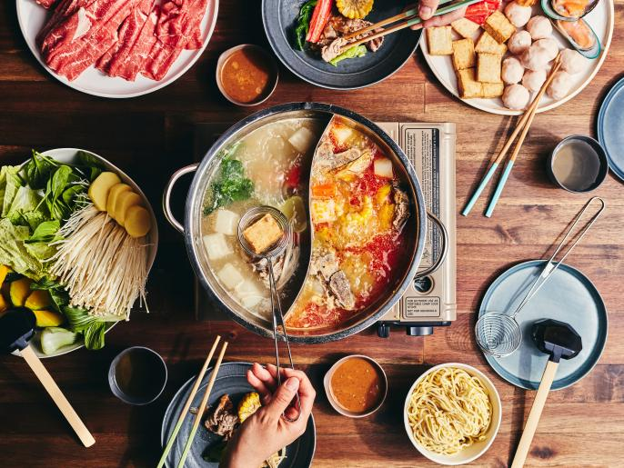

Hot Pot

Description
Hot Pot, also known as steamboat, is a popular Chinese cooking method where diners
cook a variety of raw ingredients in a simmering broth at the table. Hot Pot is
enjoyed as a communal meal, with diners gathering around the pot to cook and
share different ingredients in the flavorful broth.
Ingredients
The ingredients for Hot Pot can vary depending on personal preferences and regional
variations. Common ingredients used in Hot Pot include:
- Thinly sliced meats (e.g., beef, lamb, pork, chicken)
- Seafood (e.g., shrimp, fish balls, squid)
- Tofu and other vegetarian options
- Leafy greens (e.g., spinach, bok choy)
- Mushrooms (e.g., shiitake mushrooms, enoki mushrooms)
- Noodles and dumplings
- Broth ingredients (e.g., aromatics, seasonings, spices)
Steps
The preparation and cooking methods for Hot Pot are relatively simple. Here are
general steps for enjoying Hot Pot:
- Prepare the broth by simmering aromatic ingredients, seasonings, and spices
in a pot of water or broth.
- Set up the hot pot at the center of the table, along with a variety of
raw ingredients and dipping sauces.
- Place the ingredients into the simmering broth and cook until they are
cooked through.
- Using chopsticks or a ladle, retrieve the cooked ingredients from the
broth and dip them into the dipping sauces before enjoying.